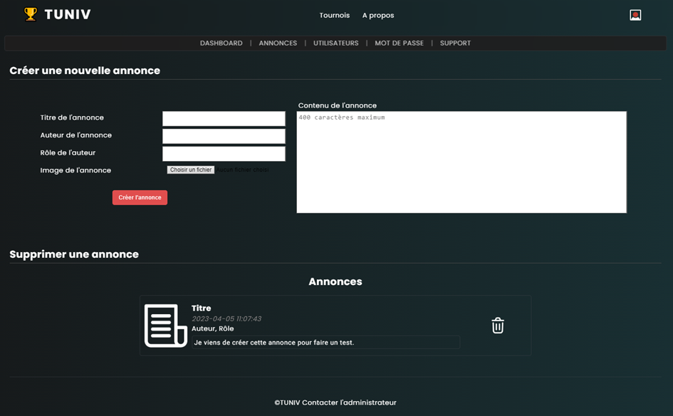
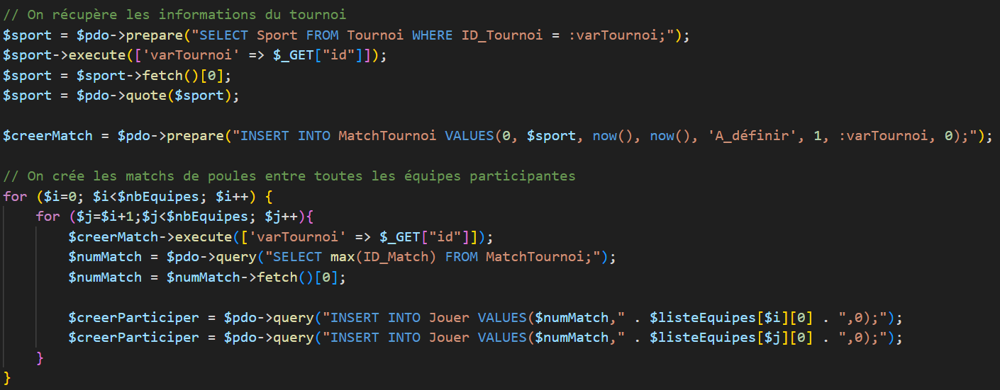

Tuniv
Le projet
Tuniv est un projet que j'ai réalisé comme projet semestriel durant ma deuxième année de BUT, au sein d'un groupe de 3 étudiants. Le sujet consistait en le développement d'un site web permettant de gérer des tournois de sport universitaires, avec une mise à jour des scores en temps réel et un affichage dynamique du classement au fur et à mesure de chaque match.
The project
Tuniv is a project I worked on as a semester-long project during my second year of BUT, as part of a group of 3 students. The subject was the development of a website to manage college sports tournament, while allowing users to keep track of scores and rankings in real time as the matches went on.
Ma contribution
J'ai travaillé sur plusieurs aspects du site : j'ai effectué la majorité du travail de conception de sa base de données, ai développé l'intégralité de l'algorithme de gestion des poules et ai travaillé conjointement avec l'un de mes collègues sur les fonctionnalités relatives aux différents types d'utilisateurs, à la connexion, la gestion des équipes et des tournois ainsi que le système d'annonces affichées sur la page d'accueil du site.
My contribution
I worked on several aspects of the site, including doing most of the database design work and the entirety of the pools algorithm. I also worked alongside one of my colleagues on functionalities related to the various user types (team captains, judges, administrators, etc), the login and team management systems, as well as the announcement functionality used to display announcements on the site's home page.
Exemple de code
Un extrait du code utilisé pour générer les matchs de poules d'un tournoi est disponible dans la galerie ci-dessous.
Lorsqu'un administrateur lance un tournoi, le site génère les matchs de poules en créant autant de matchs qu'il y a de paires d'équipes différentes jouant et en assignant chaque match à une des paires existantes.
Code example
An excerpt from the code used to generate a tournament's pool matches is available in the gallery below.
When an administrator launches a tournament, the site generates pools by creating as many matches as there are unique pairs of participating teams and assigning each match a pair.
Galerie (cliquez pour voir les images en taille réelle)
Gallery (click to see full size pictures)

La page de gestion des annonces
The announcements management page

Le code utilisé pour générer une carte à deviner chaque jour
The code used to generate a new card to guess every day